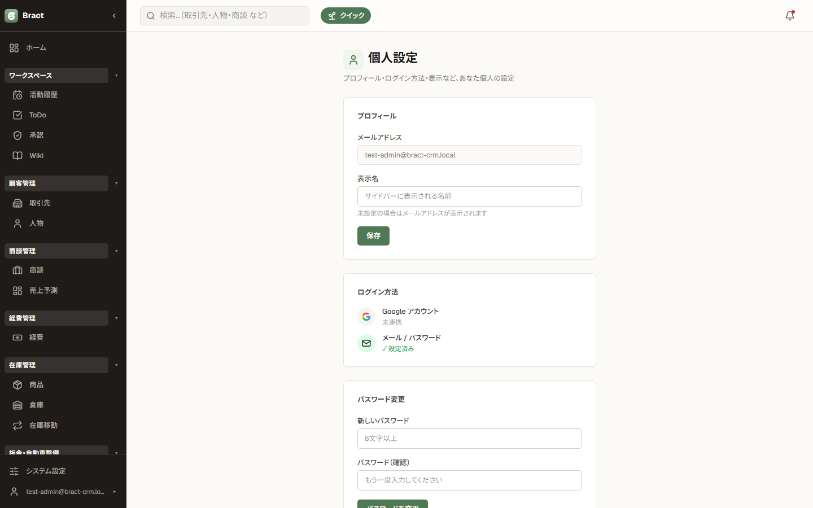
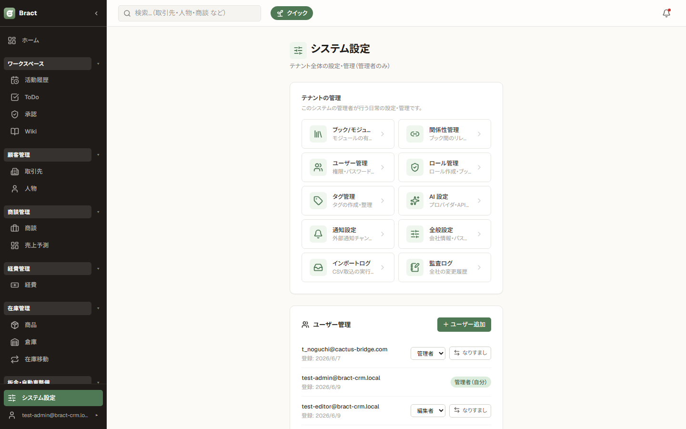
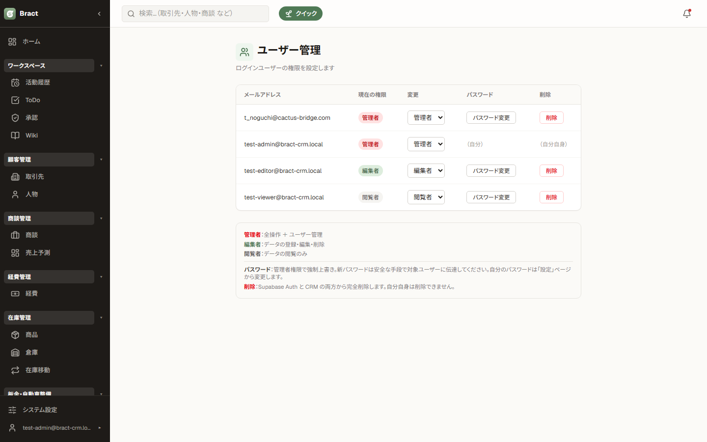
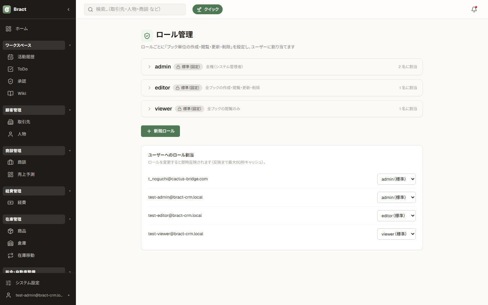
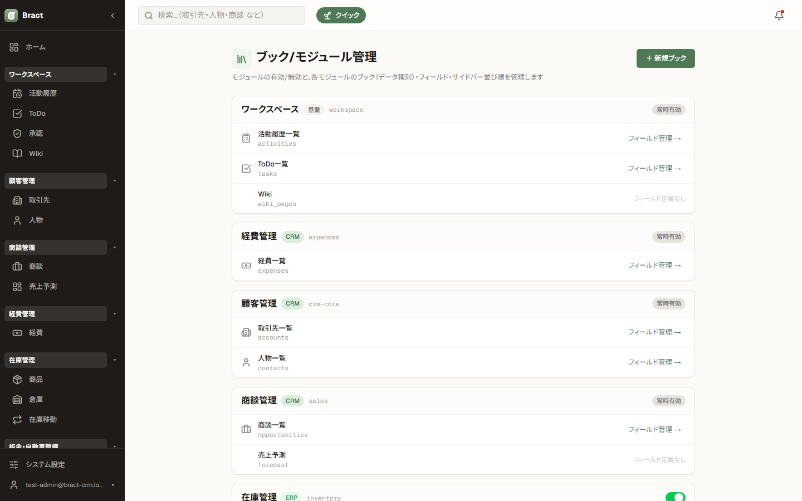
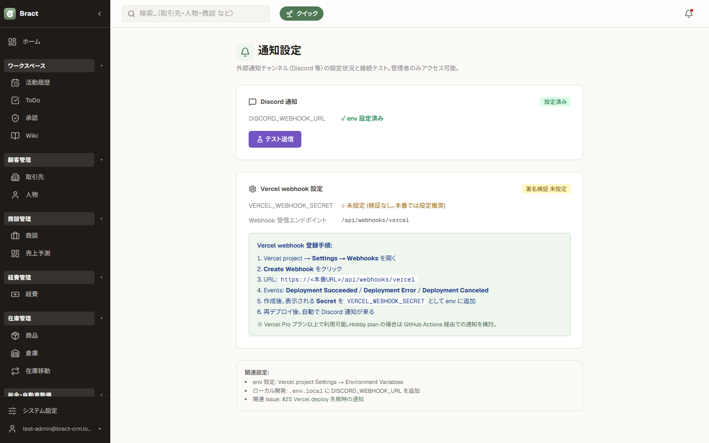
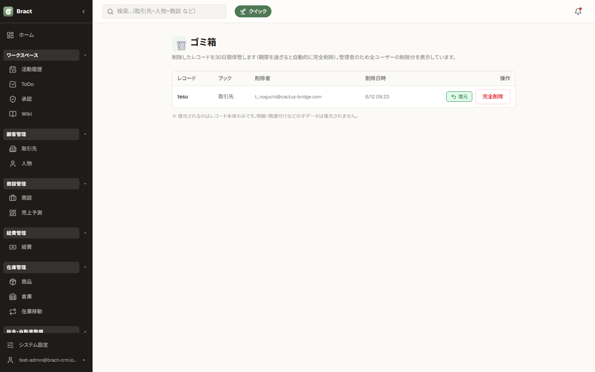

管理者編 — 設定と運用
システム管理者（admin ロール）向けの設定方法です。設定はサイドバー下部の「システム設定」から行います。
この章の内容
1. 設定画面の入り口


「設定」は自分のプロフィールなど個人の設定、「システム設定」はユーザー管理・ブック設定など 組織全体の設定です。システム設定は admin ロールのユーザーにのみ表示されます。
2. ユーザー管理（招待制）

- システム設定 → ユーザー管理 を開きます。
- ユーザーを招待 からメールアドレスとロールを指定して招待します。本人は届いた案内からパスワードを設定してログインします。
- 退職時などはユーザーを無効化します。無効化したユーザーはログインできなくなりますが、過去のレコードの担当者表示は残ります。
Bract に自己サインアップはありません。ユーザーの追加は必ずこの画面から行います。
3. ロールと権限

| admin | 全権限＋システム設定。組織に最低 1 人必要です。 |
|---|---|
| editor | レコードの作成・編集・削除ができる標準ロール。 |
| viewer | 閲覧のみ。 |
| カスタムロール | 「ブックごと」に 作成 / 閲覧 / 更新 / 削除 を細かく設定したロールを追加できます（例: 経費だけ入力できる、整備は見るだけ）。閲覧権限のないブックはナビ・検索・一覧にも表示されません。 |
4. ブックと項目（フィールド）の設定

- システム設定 → ブック管理 を開きます。
- 既存ブック（取引先・商談など）を選ぶと、カスタム項目（テキスト・数値・日付・選択リスト・チェックボックス・数式など）を追加できます。追加した項目は新規作成・詳細・一覧・フィルタ・エクスポートにすべて反映されます。
- ＋ 新規ブック で会社独自のブック（例: 「クレーム」「設備」）も作れます。作ったブックはサイドバーに表示され、標準ブックと同じように一覧・詳細・インポート/エクスポートが使えます。
項目の「表示/非表示」を切り替えれば、使わなくなった項目をデータを消さずに画面から隠せます。
5. 承認ルートの設定
- システム設定 → 承認設定 を開き、対象ブック（例: 経費、商談）を選びます。
- 「どの条件のとき（例: 金額が 10 万円以上）」「誰が（特定ユーザー / ロール）」「何段階で」承認するかをルートとして設定します。
- 商談などステータスを持つブックでは、「このステータスへ進めるとき承認が必要」という遷移トリガーも設定できます。
承認待ちのレコードは申請内容が確定するまで削除できません。ルートを変更しても、すでに申請済みのものは申請時点のルートで進みます。
6. システム設定いろいろ
| ナビゲーションの並び | サイドバーのモジュールの順序、モジュール内のブックの順序を変更できます。 |
|---|---|
| モバイル下部タブ | スマホ表示で画面下部に固定されるタブ（最大数件）を選べます。 |
| ボードの表示期間 | 商談・整備などのボードで「受注 / 失注 / 完了」の終端列に表示する期間（既定: 直近 3 ヶ月）を変更できます。 |
| ゴミ箱の保持日数 | 削除レコードを自動完全削除するまでの日数（既定: 30 日）。 |
| 商談の商品ブック | 商談明細として選択できるブックを指定します。 |
7. 通知

通知ベルに表示する内容や、外部への通知連携を設定します。
8. ゴミ箱の管理

- 一般ユーザーは自分が削除したレコードのみ、管理者は全ユーザーの削除分を確認できます。
- 誤削除は 復元 で元のブックに戻せます。
- 保持期間を過ぎたものは自動で完全削除されます。期間はシステム設定で変更できます。
9. モジュール / 契約（運営者向け）

どのモジュール（在庫管理・業種機能など）を使えるかは契約（ライセンス）で決まります。 モジュールの有効/無効の切り替えと契約情報の画面はサービス運営者のみが操作できます。 モジュールを増やしたい場合は運営者にご相談ください。一般の管理者がこの画面を開くとエラーになります。